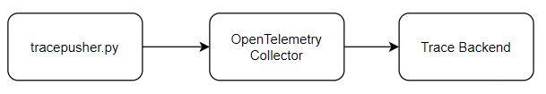
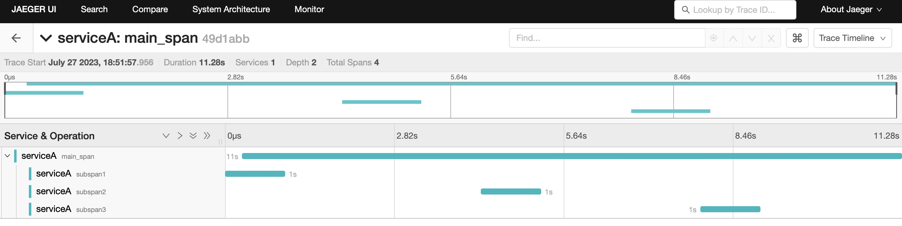

OpenTelemetry tracepusher
Trace anything with OpenTelemetry!
Generate and push OpenTelemetry Trace data to an endpoint in JSON format.
 
Watch: Tracepusher in Action
Want to do a similar thing with logs? Check out logpusher.
Uses
- DevTools .har file to OpenTelemetry Converter
- Trace Kubernetes Jobs and CronJobs with OpenTelemetry
- Trace CICD Pipelines with OpenTelemetry
- Trace shell scripts with OpenTelemetry
- Trace Helm with tracepusher
- Use tracepusher in a CICD system
- Logs to traces: Trace GitHub Codespace Creation
- Trace anything with OpenTelemetry
Try tracepusher
See try tracepusher
Quick Start
Tracepusher is available as:
Download the binary from the releases page then run:
./tracepusher --endpoint http(s)://OTEL-COLLECTOR-ENDPOINT:4318 \
--service-name service_name \
--span-name span_name \
--duration SPAN_TIME_IN_SECONDS
Advanced Usage
See the following pages for advanced usage and reference information for the flags: